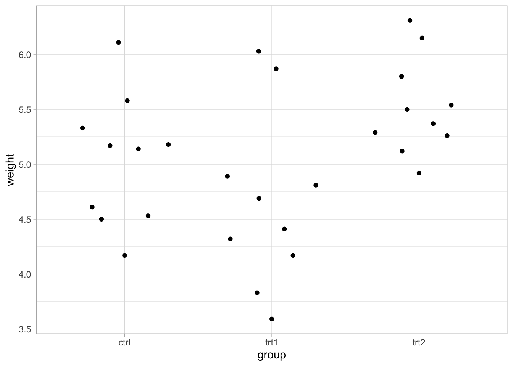
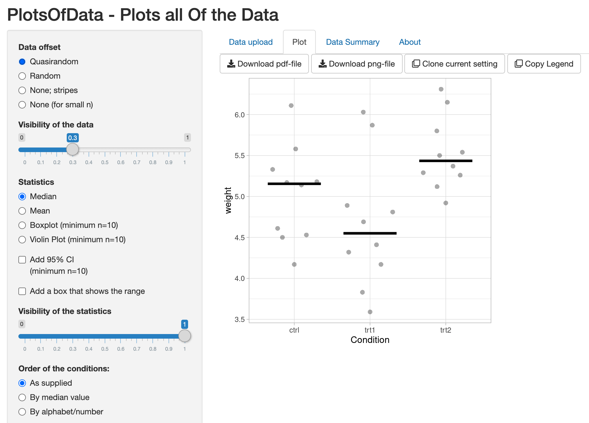
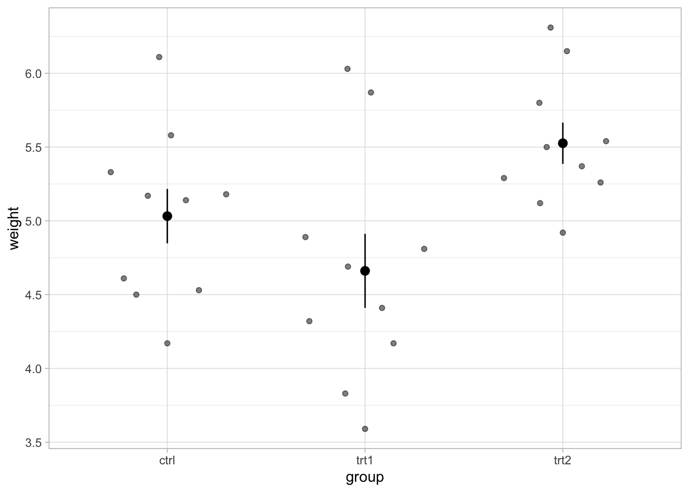

Data and Statistics
Introduction
This module will introduce some brief best practices for collecting, handling, analyzing, interpreting and communicating data in engineering. So far we have been talking about a single measurement, a datum. But in reality we will almost always be dealing with a collection of measurements, data. We used significant figures to express the uncertainty in our single measurements. How do we express the uncertainty in our data? How do we present and describe our results?
At the end of this module you should be able to:
- Identify the types of experimental variables
- Describe best practices for data collection
- Design a template file for data collection
- Understand and calculate measures of central tendency and dispersion for a dataset
- Design plots and tables to accurately and concisely represent a dataset
The skills we introduce here will be used throughout your career, almost regardless of which direction your path leads.
Collecting Data
Planning your experiment
Data collection is often a tedious task, but your efforts in planning accurate and efficient methods for collecting data will be rewarded when analyzing your results and making conclusions about the system you are trying to engineer. Before beginning an experiment, and really before designing an experiment, you need to think deeply about what the questions about your system you want your experiment to answer, or problems with your system you are trying to engineer solutions for. You should also in most cases have a hypothesis or two about the answer to this question. You also need to think deeply about what variables you may knowingly or unknowingly be manipulating in your experiment.
Variables can be any measurement you can make, or identifying information about some observation/measurement in an experiment. Variables fall into two categories: independent or dependent. Independent variables are those that you can manipulate, set, or constrain. Dependent variables depend on the independent variable and are typically measured in response to changes that you make in the independent variable.
An experiment may have any number of independent and dependent variables. Unfortunately, there are also confounding variables variables that may impact your dependent variables and therefore your results. They may be dependent on on an independent variable, or they may be another independent variable entirely. Regardless, confounding variables affect your dependent variable. Our goal as engineers and scientists is to minimize and measure any confounding variables so that we can “control” for them, i.e. account for their effects in our results. If we can control for them we improve our ability to understand the system we are trying to study/engineer. For example, if you are trying to determine how the growth rate of a strain of bacteria varies with the type of sugar in its growth medium, but you use up the last of your open bottle of growth medium after making the first sugar medium and have to open a new bottle, the different bottles of media would be a confounding variable.
Discussion
What could you do to control for this confounding variable?
Solution
You would need to make identical media with each bottle and determine the growth rate in each (essentially you need to use the old media for something else and remake it).
So for any system you are experimenting with you should make a list of all of the possible, independent variables, dependent variables, and confounding variables. In engineering applications this often means thinking about anything crossing a system boundary (including heat) and any possible changes happening within a system (including phase changes). This list of variables can be made directly on your flow diagram to help you understand how they are related.
With the variables of your experimental system identified you now need to make decisions about what values of the independent variables you will use, how and when you will measure the dependent variables, and how if possible you will control for confounding variables. Much of these decisions depend on the question you are trying to answer and convenience.
Question
What are the independent, dependent and confounding variables in the following scenarios (note there may be multiple of each type):
A. You are an engineer for a beverage company that is working on a new kombucha product. Food scientists at your company have determined that 2% acidity is prefered by most customers. You know that acidity increases with fermentation time. Your production plant has temperature-controlled batch fermenters that will be used for this product.
B. You are an environmental engineer for a non-profit organization investigating the effects of climate change on sediment transport in rivers. You have sediment concentration profiling devices in several rivers as well as weather stations at their locations.
C. You are a downstream (product purification) engineer for a startup biotech firm tasked with optimizing the purification of a therapeutic. You have previously piloted this purification with good results using ion exchange chromatography. The efficiency of ion exchange chromatography can vary with the pH and ion content of the buffer as well as the resin type and packing.A. Indpendent = ; Dependent = ; Confounding = batch
B. Indpendent = ; Dependent = ; Confounding =
C. Indpendent = ; Dependent = ; Confounding =Solution
A. Indpendent = temperature, time; Dependent = acidity; Confounding = batch, fermenter
B. Indpendent = climate change metrics (temperature, precipitation, earlier spring melts), position, time; Dependent = sediment; Confounding = year, stream
C. Indpendent = pH, ion concentration, resin type, packing (this might also be confounding, since we can’t perfectly prescribe this); Dependent = product purity, yield; Confounding = packing, initial batch of unpure therapeutic
Designing your data collection
Definining datasets
During an experiment we are collecting measurements; that is recording values of the variables we identified in our experiment planning above. Connected values of different variables are observations, for the above bacterial growth on different sugars an observation would be the collection of values for time, medium, and cell concentration. How should we record these data? In order to simplify your job in collecting the data and more importantly in analyzing and making conclusions from your data you should design you data collection method with these future tasks in mind.
Tidying data
Ideally, the data we collect will be tidy, in a structure that is easy for us to plot and analyze by comparing different values of variables. “Tidy” data has actually been defined by data scientists as data that has each variable in a separate column, each observation in a separate row, and each cell containing a value. This helps us understand the logical model of an experiment
 While other forms of data tables are useful in some cases for collecting data efficiently presenting in tables, or plotting using spreadsheet software, tidy-formatted data will be the most flexible for summarizing, converting to other formats, plotting using statistical software, and thinking through the logic of an experiment.
While other forms of data tables are useful in some cases for collecting data efficiently presenting in tables, or plotting using spreadsheet software, tidy-formatted data will be the most flexible for summarizing, converting to other formats, plotting using statistical software, and thinking through the logic of an experiment.
For example, let’s consider an experiment comparing plant growth, as represented by the dry weight of plants in three different conditions, a control and two different treatments. Groups of ten plants were grown in each condition. The plants were dried in an oven and weighed.
We might collect the data in form like this:| weight | group |
|---|---|
| 4.17 | ctrl |
| 5.58 | ctrl |
| 5.18 | ctrl |
| 6.11 | ctrl |
| 4.50 | ctrl |
| 4.61 | ctrl |
| 5.17 | ctrl |
| 4.53 | ctrl |
| 5.33 | ctrl |
| 5.14 | ctrl |
| 4.81 | trt1 |
| 4.17 | trt1 |
| 4.41 | trt1 |
| 3.59 | trt1 |
| 5.87 | trt1 |
| 3.83 | trt1 |
| 6.03 | trt1 |
| 4.89 | trt1 |
| 4.32 | trt1 |
| 4.69 | trt1 |
| 6.31 | trt2 |
| 5.12 | trt2 |
| 5.54 | trt2 |
| 5.50 | trt2 |
| 5.37 | trt2 |
| 5.29 | trt2 |
| 4.92 | trt2 |
| 6.15 | trt2 |
| 5.80 | trt2 |
| 5.26 | trt2 |
Or like this:
| ctrl | trt1 | trt2 |
|---|---|---|
| 4.17 | 4.81 | 6.31 |
| 5.58 | 4.17 | 5.12 |
| 5.18 | 4.41 | 5.54 |
| 6.11 | 3.59 | 5.50 |
| 4.50 | 5.87 | 5.37 |
| 4.61 | 3.83 | 5.29 |
| 5.17 | 6.03 | 4.92 |
| 4.53 | 4.89 | 6.15 |
| 5.33 | 4.32 | 5.80 |
| 5.14 | 4.69 | 5.26 |
Question
What represents each of the following in this experiment?
Independent Variable =
Dependent Variable =
An observation =Solution
Independent Variable = treatment, group, condition
Dependent Variable = weight
An observation = each plant, a plant
Question
Which of the above is the tidy dataset?
Solution
1
While the second wider dataset may save space in your notebook, there is no logic to the rows. There is no connection between any of the three plants, the columns could be shuffled without consequence. Also, we don’t know immediately what the values represent. We need to communicate that the values represent plant weights somewhere else, perhaps in the title or legend.
Datasets don’t generally start out as tidy datasets. Today there are many ways of collecting data, the classic eyeballs, pencil, and paper, spreadsheet software like Excel or Google Sheets, cameras everywhere for recording things, and many instruments that automatically record data. All of these methods work well, but you should think about what will be the most robust and useful in your situation. For example, if your experiment involves liquids with the potential for spills using a pen and paper is a bad idea as it would run if a spill happened. Pencil would be a better choice, but regardless handwritten data should be transcribed to a more indelible and useful medium soon. If you have made a recording how will you get this data into a spreadsheet? Even if an instrument gives you the data as a spreadsheet, this data might not be tidy, and you will also probably need to add more identifying information and other variables to this data.
Best Practices
Collection or compilation of the raw data into tidy tables, as described above, using spreadsheet or database software is the most common practice for data collection and compilation. However, recording data in spreadsheet software can have it’s downfalls. Spreadsheet software occasionally automatically formats dates, times, and other things like certain gene names. Be careful of this, set column formats when designing your data collection spreadsheet, and test this spreadsheet with all possible values. Spreadsheet software can also make it far too easy to overwrite data, perhaps accidentally recording current values in the same row as previous values. To avoid this you can create data entry forms using Microsoft or Google tools, and also use cloud storage that tracks the history of your data collection file.
In general it is best practice to
(1) always create a new version of a dataset before doing any work with it,
(2) keeping good notes about what was done (you will need to write this up in your methods section of reports!), and
(3) double check a few test rows to make sure nothing has gone awry in your editing before saving.
If you are doing a lot of data collection and processing it is worth while to learn a programming language like R, Python, or Matlab, as these will allow you to automate tasks, prevent errors, and automatically adhere to the best practices above. You will learn R in BSE3534 Numerical Methods. There are also a lot of great tools available on the web now for tidying and plotting your data that are graphically based like Google’s OpenRefine and the Plots of Data website we will demonstrate later.
Data reliability and experimental reproducibility is one of the ethical responsibilities of scientists and engineers!
Analyzing Data
Once you have collected your data you can analyze it to hopefully improve your understanding of the system you are studying or engineering.
One of the biggest challenges in studying and engineering biological systems is the high level random error inherent in the complexity of biological systems. Ecosystems, populations, organisms, cells, and even individual biomolecules like proteins, can be enormously variable with numerous uncontrollable confounding variables. So how do we measure the this uncertainty and take it into account in our analysis?
Visualizing Variation
The best way to measure the random error in experiments is replication, or repeating experiments multiple times, in multiple places, on multiple days. collect several samples. Oftentimes in the biological sciences we include several biological replicates, like the ten plants measured in the above plant growth experiments. These replicates hopefully capture the variation inherent in the biology of the plants. We also include technical replicates, often repeating the experiment on different days, to capture variation due to our technique and other confounders day-to-day.
Analyzing our data and extracting understanding from our experiments often boils down to comparing this variation between different sets of observations. For example, lets compare the variation between and within treatments for the plant growth experiment above. We can visualize this variation, by plotting the weights of all of the plants in each treatment group.

Discussion
Describe the above graph. Are the distributions of plant weights very different?
Solution
The control and treatment one distributions are very similar. treatment one plants may have a bit lower weight on average than control group. Treatment one has very high variation between plants. Treatment two seems to be a bit higher on average and has less variation in weight than control.
While you can technically make these plots in Microsoft Excel, it is quite time consuming. I would highly recommend make plots by uploading your data to an online tool called Plots of Data. Plots of Data makes this task very simple. Just upload the data and select that we want to compare the conditions in the group variable, based on the weight variable.

This visualization gives us an idea of what is going on without being misleading about the conclusions we can draw from our results. While we don’t have time in this course for a full introduction to statistics and hypothesis testing, we do want to introduce how we can measure the differences between these groups and the variation within them.
Measuring Differences and Variation
We describe the differences between groups and the random error in groups with measures of central tendency and dispersion, respectively. We should also using significant figures when calculating these summary statistics. Significant figures communicate the uncertainty from the tools we used to make our measurements, and the dispersion of our data communicate the uncertainty in the biology/physics/chemistry of our system and our experimental setup. In many areas of science, technology, engineering, and mathematics (STEM), it is now rightly becoming the norm to transparently show the full dataset on a plot with each datum as an individual point as done above, in addition to plotting measures of central tendency and dispersion. This allows readers/viewers to best reassess the data independently and make their own conclusion.
For example, we could plot the mean and standard error of the mean for each treatment.

In STEM fields we most often make use of mean (average), median, and mode as measures of central tendency. The mean is the sum of the values of the data divided by the total number of values. The median is the middle value, if all of the values were ordered from smallest to largest. The mode is the value that appears most frequently in the data. However, mode is often incalculable unless our data is discrete (not continuous), has very little variation, or we have lots of data like the distributions we’ll describe below.
Depending on the data, what they represent, and how they were collected, the values of these measures of central tendency can be nearly identical or quite different. For example what if we had two data sets like below. These two data sets are smoothed representations of real data called distributions. These may be really large data sets that approach smooth, like the rain per month at two different locations over many-many years, or the expression of a cancer marker gene in many cells from a cancer patient versus control patient.

Two distributions are plotted, one as solid lines and the other as a dotted line along wiht mean, median and mode as colored vertical lines. Standard deviations (σ) are listed next to each distribution. Source: https://commons.wikimedia.org/wiki/File:Comparison_mean_median_mode.svg
{kind=link}
For the two distributions above the medians are the same, and the mean of the dotted distribution is higher than the solid distribution, just because there are some values in the dotted distribution that are very large. These summary statistics do not accurately represent these distributions. For many experimental datasets this may be the case, so it is always best to present the complete dataset along with these summaries.
We can calculate these measures of central tendency using most spreadsheet and statistical software. Using spreadsheet software, select a new cell in your datasheet and type = to enter a function in this cell. To find the mean type AVERAGE() and with your cursor in the parentheses select the cells containing the values you want the mean of. You can also do this using pivot tables or AVERAGEIF() if your dataset is not in a nice order, but it is probably best to use the sort function in the menu bar to rearrange your data (just don’t forget to make a copy before manipulating your data so you can easily redo, in case something goes wrong. To find the mode and median in Excel or Sheets use MODE() and MEDIAN(), respectively.
Be sure to label any cell in which you have done a calculation in a neighboring cell! Otherwise anyone reading your spreadsheet will have to click on the cell to know what was done. Another advantage of using a programming language like R, Python or Matlab to do your data tidying and analysis is that it is much easier to view what functions were used for different task and troubleshoot any issues.
To summarize dispersion or uncertainty we can use range, variance, standard deviation, or coefficient of variation. Typically we will use standard deviation, which in Excel or Sheets is STDEV(). Make sure not to use STDEVP(), as this this the standard deviation assuming we have measured the complete population. In almost every case we will want to calculate the standard deviation of our sample using STDEV() or the equivalent STDEVS(). Each measure of dispersion also communicates slightly different information about the shape of the data. Again, the best practice is to show all of the data in plots, in addition to some measure of dispersion, and use all of the data in your analysis to allow yourself and others to make the most informed conclusions about your experiment. In the above distributions for example, just communicating the standard deviation and mean tells you very little about the shape of the distribution.
In fact unless a dataset is roughly bell-shaped and symmetrical (referred to as normal, or normally distributed) like the solid distribution above the mean and standard deviation are meaningless. Therefore it is very important to be clear about the shape of your data. It also important to be very clear about what measure of dispersion is plotted. You may also be familiar with standard error or standard error of the mean (typically abbreviated as SE or SEM). As this name implies, standard error of the mean is a measure of our uncertainty in the mean, not really the dispersion of the data. Standard error is the standard deviation divided by the square root of the number of measurements in your sample \(\text{SEM} = \sigma / \sqrt{n}\). So as your sample size gets larger and larger standard error of the mean approaches zero, because you have more and more information about the “true” population mean. Thus standard error can be misleading if you are trying to compare two populations as a whole and not just the means of those populations. Standard errors and standard deviations are often confused, so make sure to double check what you are plotting and include a clear and accurate description in your figure legend. To calculate standard error of the mean in ExcelSheets you need to first calculate the standard deviation then divide by the square root of the number of measurements, so =STDEV(#Values#)/SQRT(COUNT(#VALUES#)).
Question
Using the Excel, Google Sheets, or Plots of Data to calculate the mean and standard deviation of the control treatment in the plant growth experiment above. Do these data look normally distributed to you? mean =
standard deviation =
normal =Solution
mean = 5.03
standard deviation = 0.58
normal = yes, probably
Note it is common to mistake the STDEV() and STDEVP(), or similar functions. The standard deviation of a collection of measurements (a sample) is STDEV() or STDEV.S(). STDEVP() or STDEV.P() returns the projected standard deviation of the whole population (if we were able to make infinite measurements or measure all of the possible samples) based on the number of measurements in your sample.
Again, these measures of central tendency and dispersion only apply to normally distributed data. While there are ways to compare non-normal data (like the 95% confidence intervals of the median calculated by Plots of Data), they are beyond the scope of this course. For now we want you to focus on accurately describing your results and the uncertainty in them and commenting on how these results and uncertainties will affect your ability to engineer the system of interest. We will cover our expectations for your lab reports in more detail in the energy balance lab.